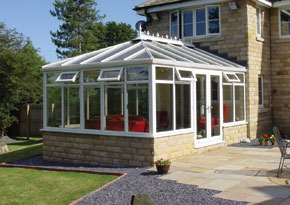

|
Conservatory Collection Conservatories are an ideal way of enhancing your property by adding extra living space or simply to provide you with a room in which to relax and enjoy the garden.
As a company with years of experience, we will carefully design and construct your new conservatory to the highest standards using only the
Our conservatories come in the following designs; Gable, Edwardian, Victorian, P shape, T shape as well as Lean-to. We also supply a range of popular sunrooms and can even design a bespoke conservatory catered to your individual taste and needs.
The real beauty of a well designed conservatory is the creation of additional space and added value to your property. It is a room for all seasons and will become the focal point of your home. We craft a number of designs,
so you are sure to find a conservatory suited to your needs that will bring elegance and beauty to your house. Click here to view our conservatory gallery |

Oak Gable Fronted |
Come in to see the largest indoor showroom on the |